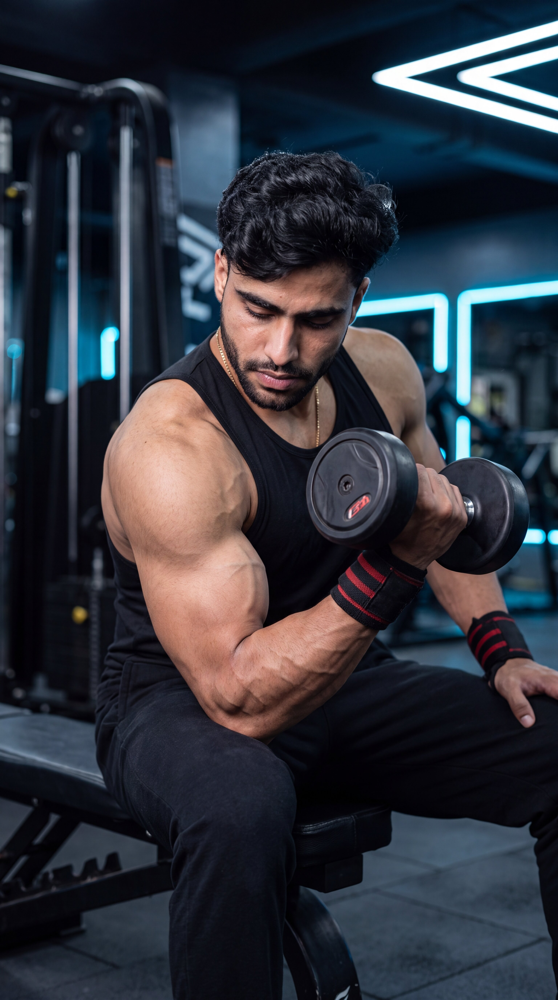

Primary Muscle
Biceps Brachii
Maximize Peak Contraction, Build Bigger Biceps & Improve Arm Definition
The Concentration Curl is one of the most effective isolation exercises for building well-defined biceps through strict technique and maximum muscle contraction. By bracing your upper arm against your inner thigh, the movement minimizes momentum, allowing the biceps to perform nearly all of the work. This exercise enhances the mind-muscle connection, improves arm symmetry, and delivers an intense peak contraction, making it an excellent choice for developing bigger, stronger, and more defined biceps.

Biceps Brachii
Dumbbell
Beginner
Isolation
Discover which muscles are primarily responsible for the Concentration Curl and which supporting muscles assist during elbow flexion, forearm stability, and grip strength. The strict seated position minimizes momentum, allowing maximum biceps isolation, stronger peak contraction, and improved arm definition with every repetition.
Front Upper Arms
Upper Arm Flexor
Forearm
Grip Muscles
Discover how the Concentration Curl helps isolate the biceps, maximize peak contraction, improve the mind-muscle connection, reduce momentum, and build bigger, stronger, and more defined arms through strict single-arm training.
Bracing your upper arm against your inner thigh minimizes assistance from other muscles, allowing the biceps to perform nearly all of the work throughout each repetition.
The seated position makes it easier to achieve a powerful squeeze at the top of every repetition, helping improve biceps shape and overall muscle definition.
The strict movement encourages complete focus on the working arm, improving muscle activation and helping you contract the biceps more effectively during every repetition.
Supporting your arm against your leg prevents body swinging and cheating, ensuring strict technique while placing maximum tension on the biceps.
Training one arm at a time helps identify and correct muscular imbalances while improving arm symmetry, coordination, and overall strength.
Combining strict isolation, peak contraction, and progressive overload makes the Concentration Curl one of the best exercises for increasing biceps size, definition, and overall arm aesthetics.
Follow these step-by-step instructions to perform the Concentration Curl with proper form, strict control, and maximum biceps isolation. Using the correct technique helps improve peak contraction, strengthen the mind-muscle connection, and build bigger, more defined biceps while minimizing momentum.
Sit on a flat bench with your feet firmly on the floor. Hold a dumbbell in one hand and rest the back of your upper arm against the inside of your thigh while allowing the arm to fully extend.
Keep your chest up and maintain a stable seated position throughout the exercise.
Press your upper arm firmly against your inner thigh to prevent movement. Keep your wrist neutral and avoid lifting your elbow during the curl.
Your upper arm should remain completely stationary from start to finish.
Curl the dumbbell toward your shoulder by flexing your elbow while keeping your upper arm fixed. Lift smoothly without using your shoulders or body momentum.
Focus on contracting your biceps instead of simply lifting the dumbbell.
Pause briefly when the dumbbell reaches the top of the movement and squeeze your biceps as hard as possible before lowering the weight.
Hold the peak contraction for one second to maximize muscle activation.
Slowly lower the dumbbell back to the starting position while maintaining complete control. Fully extend your arm without locking the elbow before beginning the next repetition.
Take two to three seconds during the lowering phase to increase time under tension and stimulate greater biceps growth.
Avoid these common technique mistakes to maximize biceps isolation, improve peak contraction, maintain strict form, and perform the Concentration Curl safely and effectively for better arm development.
Raising your upper arm during the curl reduces biceps isolation and allows other muscles to assist, making the exercise less effective.
Keep your upper arm firmly pressed against your inner thigh throughout every repetition.
Swinging your torso or shoulders to lift the dumbbell reduces biceps activation and defeats the purpose of this strict isolation exercise.
Sit upright, brace your core, and use a lighter dumbbell that allows complete control.
Performing the movement too quickly reduces time under tension and limits the peak contraction that makes the Concentration Curl so effective.
Lift and lower the dumbbell slowly, pausing briefly at the top of each repetition.
Stopping short of full elbow extension or not curling high enough reduces muscle activation and limits overall biceps development.
Fully extend your arm at the bottom and squeeze your biceps at the top during every controlled repetition.
Apply these practical coaching cues to improve your Concentration Curl technique, maximize biceps isolation, achieve a stronger peak contraction, and perform every repetition with strict control for bigger, stronger, and more defined arms.
Press your upper arm firmly against your inner thigh throughout the exercise. Allowing it to move reduces biceps isolation and decreases the effectiveness of the movement.
Only your forearm should move during every repetition.
Keep your torso still and avoid swinging the dumbbell. Strict technique places maximum tension on the biceps and produces better results than using heavier weights with poor form.
Lift with your biceps—not your shoulders or your body.
Pause briefly when the dumbbell reaches the top of the movement and contract your biceps as hard as possible. This improves peak contraction and strengthens the mind-muscle connection.
Think about squeezing the biceps instead of simply lifting the dumbbell.
Lower the dumbbell slowly while maintaining full control. A controlled eccentric phase increases time under tension, leading to greater muscle growth and improved strength.
Take two to three seconds to lower the dumbbell before beginning the next repetition.
Progress from learning proper Concentration Curl technique to maximizing biceps isolation, improving peak contraction, and advancing to more challenging curl variations for complete arm development and long-term muscle growth.
Begin with a light dumbbell and learn the correct seated position, arm placement, and controlled curling motion while keeping your upper arm firmly against your inner thigh.
Body position, arm stability, posture, and strict technique.
Perform slow, controlled repetitions while pausing briefly at the top of every curl. Focus on squeezing the biceps as hard as possible to improve muscle activation and the mind-muscle connection.
Peak contraction, strict control, mind-muscle connection, and smooth tempo.
Gradually increase the dumbbell weight while maintaining perfect technique, full range of motion, and controlled repetitions to build bigger, stronger biceps safely.
Progressive overload, strict form, eccentric control, and hypertrophy.
Once you've mastered the Concentration Curl, challenge your biceps with Incline Dumbbell Curls, Cable Curls, Preacher Curls, Hammer Curls, or Heavy Barbell Curls to continue increasing arm size, strength, and overall biceps development.
Advanced hypertrophy, arm symmetry, strength progression, and complete biceps development.
Find clear answers to common questions about the Concentration Curl, including proper technique, muscles worked, training frequency, and progression for building bigger, stronger, and more defined biceps.
The Concentration Curl primarily targets the biceps brachii while also recruiting the brachialis, brachioradialis, and forearm muscles. Its strict setup maximizes biceps isolation and peak contraction.
Because your upper arm is supported against your inner thigh, momentum is minimized and the biceps perform almost all of the work. This improves the mind-muscle connection and creates a stronger peak contraction.
No. Concentration Curls are most effective with moderate weights that allow strict form, a full range of motion, and a strong squeeze at the top of every repetition.
Yes. Beginners should start with a light dumbbell, keep the upper arm firmly against the inner thigh, avoid swinging, and prioritize smooth, controlled repetitions before increasing the weight.
Most people benefit from performing Concentration Curls one to two times per week as part of an arm or upper-body workout while allowing adequate recovery between sessions.
For muscle growth, perform 2–4 working sets of 8–12 controlled repetitions. Focus on using a full range of motion, squeezing the biceps at the top, and applying progressive overload while maintaining perfect technique.
Continue building stronger, bigger, and more defined biceps with these complementary exercises. Each movement targets the biceps from a unique angle to improve muscle size, peak contraction, symmetry, and overall arm development.


Continue building bigger, stronger, and more defined arms with step-by-step exercise guides covering proper technique, muscles worked, common mistakes, expert coaching tips, and progressive training strategies.